はじめに
当社は危険物タンクや配管の気密漏洩試験を主体に、
危険物施設に関するあらゆるニーズにお応えし、
施設保全と維持管理の向上に努めております。
地下タンク検査では国産で初めて確立したテクノフロンティアより
受け継いだ技術と経験で業界では老舗の当社は未来の環境を守り、
検査による早期発見で事故を未然に防ぎます。
危険物施設に関するあらゆるニーズにお応えし、
施設保全と維持管理の向上に努めております。
地下タンク検査では国産で初めて確立したテクノフロンティアより
受け継いだ技術と経験で業界では老舗の当社は未来の環境を守り、
検査による早期発見で事故を未然に防ぎます。
事業内容
- 地下タンク機密漏洩検査
- 埋設配管機密漏洩検査
- 移動タンク（ローリー）機密漏洩検査
- タンク内部清掃
- タンク廃止処理
- タンク設置工事
- 配管改修工事
- 廃油回収
- 内部ライニング計量機検定
- ボイラー施設各種点検
- 電気防食高精度油面計
- 災害緊急給油
事業案内
-
危険物地下タンク及び埋設配管気密漏洩検査気相部検査(微加圧法、加圧法)、液相部検査(聴音測定、水位測定、自然法査測定)、二重殻タンク外殻検査(加圧法、減圧法)、測定装置は気相部検査用に4機種、液相部検査用に2機種、すべてのニーズに合わせた検査が可能です。

-
移動タンク気密漏洩検査ローリーは 単槽から多槽まで自動検査装置でいかなる検査も可能です。また安全弁検査も行います。消火器点検も行えます。

-
タンク内部水抜きと循環清掃作業タンク内部の水は結露などでたまります。また底部にはスラッジもたまります。循環型清掃で水抜きも行い同時に清掃もします。

-
危険物タンク廃止消防署への書類手続き、事前指導も代行、水入れ、砂入れ、撤去、あらゆる廃止工事も可能です。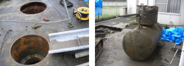
-
危険物タンクの設置ホームタンクより大型の地下タンクの設置、新設のタンクの敷設工事も行っています。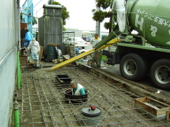
-
各種配管工事各配管の改修工事、各配管の個別の漏洩検査、フランジパッキン交換、バルブの交換等行います。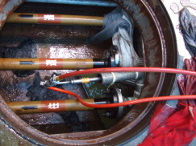
-
内面ライニング工事紫外線硬化樹脂貼付法による安全なFRPライニングです。当社は総合事業者の認定をうけております。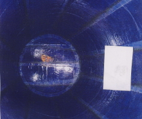
-
油面計工事高感度油面計からアナログのフロート式の油面計まで扱っています。
-
計量機の点検からメンテ計量検定、各種ノズルの交換、ホース交換等行っています。
-
ボイラー施設の各種点検法定点検及び貯油槽、熱交換器の点検。保守を行っています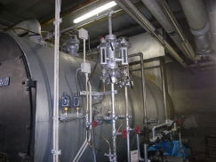
-
土壌調査油で汚染された土地等の土壌調査や土壌改良作業を行っています。
-
地下タンク内部清掃、地上タンク内部清掃内部を洗浄してより確実な加圧検査を実施します。

-
電気防食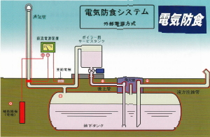
-
高精度油面計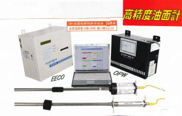
-
緊急給油システムムサシ産業緊急時給油システムとは
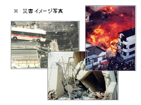
緊急時（震災などの広域災害時や有事の際、または局所的な停電等）には、通信・電気・ガス・水道などの「ライフライン」が機能を失う危険性があり、復旧まで長時間を要します。
自家発電システムが設置されている施設においては、機器に損傷がなければ停電時には一時的に電力供給が可能となります。
しかし、自家発電の稼働時間は短時間であるため、迅速な燃料の供給体制が必要となります。
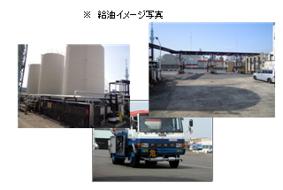
ムサシ産業では、ムサシ緊急給油システムによって、現状のリスクを分散し、より地域と密着し緊急時の対応を行うことにより、「確実かつ短時間・最短ルート」での燃料供給を実現いたします。
概要イメージ図
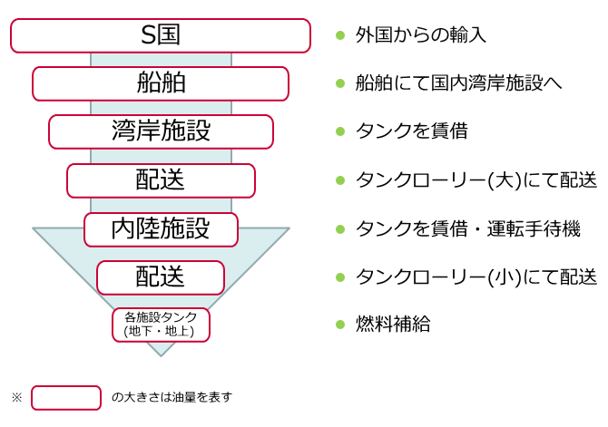湾岸施設
湾岸に面している油槽所(8ヶ所予定) 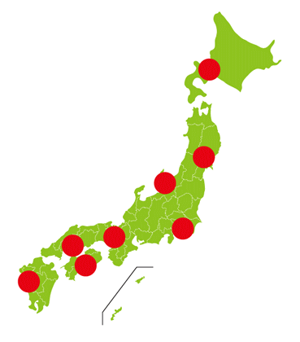-
北海道油槽所
札幌市・・・ - 東北油槽所
仙台市・・・ -
新潟油槽所
新潟市・・・ -
関東油槽所
横浜市・・・ -
関西油槽所
大阪市・・・ -
広島油槽所
広島市・・・ -
四国油槽所
高知市・・・ -
九州油槽所
長崎市・・・
ムサシ産業(株) 給油依頼連絡系統図・給油体制
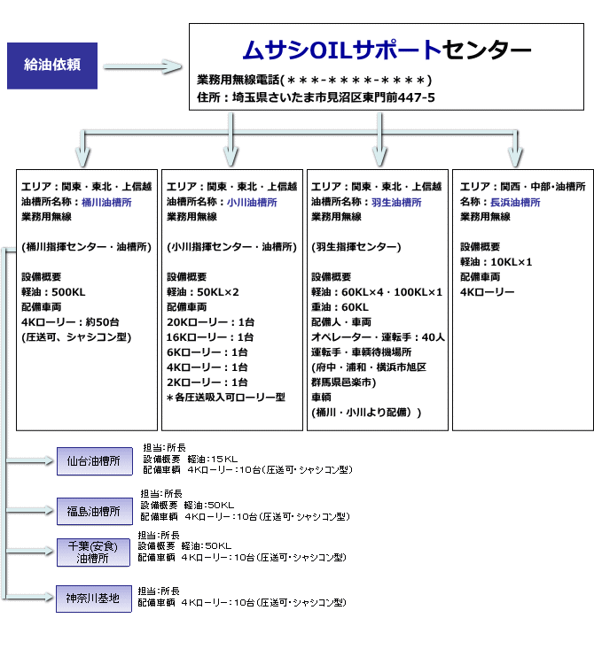費用について
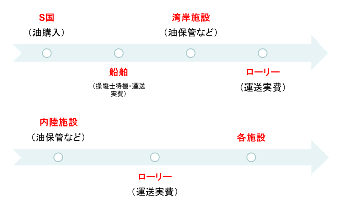固定費詳細
前頁「油保管料など」についての費用詳細(毎月かかる経費)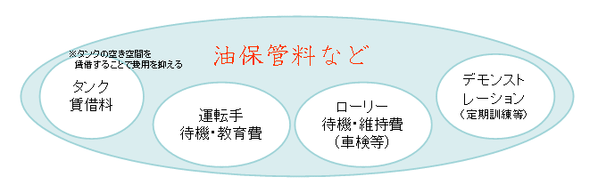
前頁「配送実費」についての費用(実際の運用時の費用)
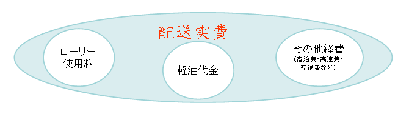
その他、特記事項
- 特殊電話・インターネット回線を常備
※インターネットを介した通話サービス(LINEやskypeなど)を基本とするが特殊電話も設置。 - 免責事項・損害賠償に関しては、契約時に別途協議。
有事の際の連絡手段
免責・賠償について